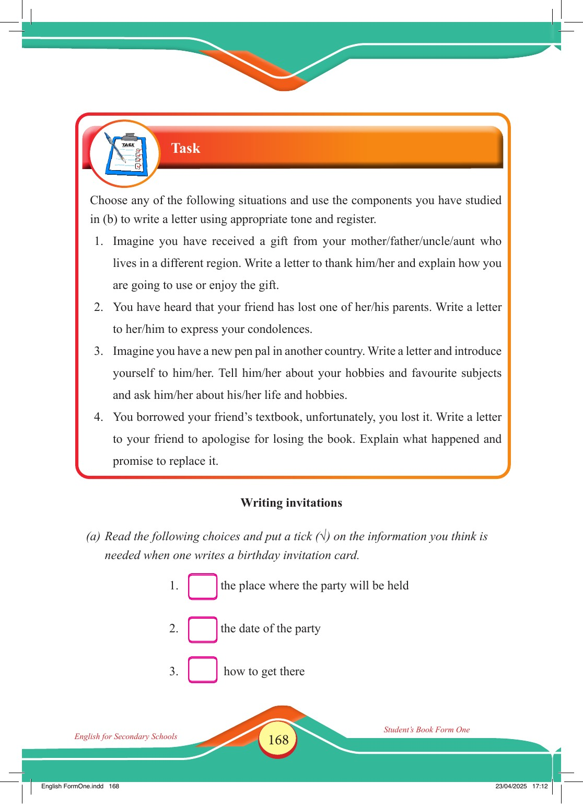

Accessible text transcript - page 168
Use the reader's read-aloud controls or select an individual segment below.
Printed book page 168. English for Secondary Schools Student’s Book Form One Clipboard labeled 'TASK' with a pen and checklist Task Choose any of the following situations and use the components you have studied in (b) to write a letter using appropriate tone and register. 1. Imagine you have received a gift from your mother/father/uncle/aunt who lives in a different region. Write a letter to thank him/her and explain how you are going to use or enjoy the gift. 2. You have heard that your friend has lost one of her/his parents. Write a letter to her/him to express your condolences. 3. Imagine you have a new pen pal in another country. Write a letter and introduce yourself to him/her. Tell him/her about your hobbies and favourite subjects and ask him/her about his/her life and hobbies. 4. You borrowed your friend’s textbook, unfortunately, you lost it. Write a letter to your friend to apologise for losing the book. Explain what happened and promise to replace it. Writing invitations (a) Read the following choices and put a tick (√) on the information you think is needed when one writes a birthday invitation card. 1. the place where the party will be held 2. the date of the party 3. how to get there English for Secondary Schools Student’s Book Form One Return to the page image